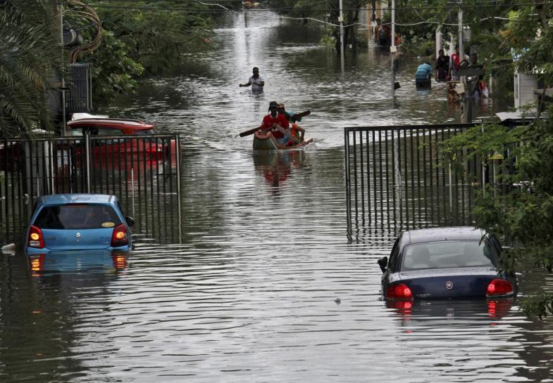

Related Articles

March
1
Thousands evacuated in Australia’s worst flooding in almost half a century
April
2
In the last 2 years, extreme weather events killed 152 in Telangana
March
28
Iota strengthens into hurricane; 13th of Atlantic season
FEB
20
This week to be warmer than usual in Pune: IMD forecast
March
20
Weather conditions in north India delay several flights to & from Pune
March
1
Netizens feel Bengaluru too hot to handle now
VIEW ALL NEWS